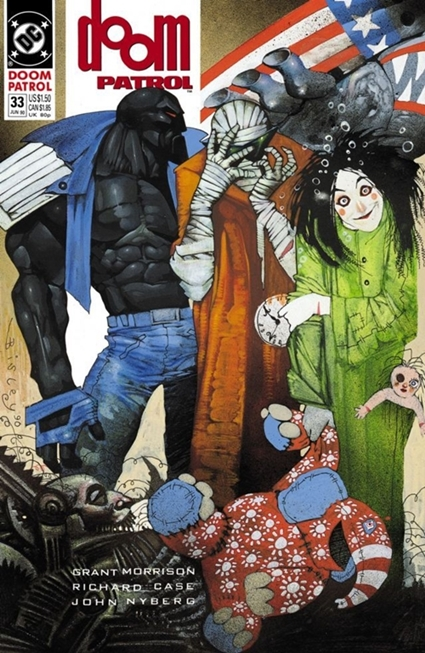

Batman:Silencio
los villanos clásicos de Batman están decididos a sumir
su vida en un caos total. Lejos de ser el día día en la vida
del Caballero Oscuro, su actividad se convierte en una trampa
mortal en la además que se verá involucrado un nuevo y misterioso
malhechor conocido como Silencio, un tipo dispuesto a todo con tal
de destruir a nuestro atormentado héroe. En paralelo, la historia hace
foco en la relación sentimental (casi de amor/odio) que mantienen el
murciélago y Catwoman.

Batman:the killing joke
Nos presenta una historia de el héroe enmascarado y al
criminal del traje púrpura como dos personajes sumamente
parecidos: la tragedia golpeó sus vidas y les hizo convertirse
en lo que son. De hecho, la trama nos sugiere que tanto Batman
como Joker tienen problemas mentales; lo que les diferencia es
su capacidad para canalizar su locura en pos de un determinado
fin (combatir el crimen o cometerlo).

Kingdom Come
Nos plantea una humanidad repleta de seres con superpoderes,
los cuales utilizan sus habilidades bien para su beneficio,
bien para aplicar justicia a su muy particular manera. Esto
los enfrenta con los miembros de la Liga de la Justicia
(los nuevos… y los de siempre: Superman, Wonder Woman, Batman,
Linterna Verde y Flash), que regresan a una sociedad corrompida
liderada por Lex Luthor.

All Star Superman
El Hombre de Acero sufre una sobrecarga de energía solar que sus
células no son capaces de absorber. Kal-El sufre de cáncer
terminal en otras palabras, y antes de morir al igual
que hercules realizara tareas que debe cumplir, regresa con
todo su elenco de personajes y villanos llevandonos a Una
de las mejores historias jamas escritas del personaje
demostrando su personalidad unica y bondadosa como
siempre.

El Hombre Que Lo Tenia Todo
En esta historia nos plantea a un Kal-El felizmente casado con una famosa
actriz y padre de 2 hijos que vive en Krypton y estudia
los cráteres de Kandor. Esta utopía feliz se va tornando
incierta a medida que la consciencia de Superman lucha
contra la que supone una realidad ficticia donde es feliz
pero le falta algo que nunca reemplazara con nada en todo el
universo y debera saber que es.
Flashpoint
Nos relata la historia de como flash reverso, el archienemigo
de flash, viaja al pasado para no asesinar a su madre del mismo
y las consecuencias provocaron que entre otras cosas, que superman
no fuera criado por los kent, y que bruce wayne este muerto y que
su padreThomas se convierta en una version alterada de Batman
creando paradojas temporales interesantes que debera solucionar si
quiere salvar o regresar al mundo donde pertenece
Batman La Caida Del Murcielago
La historia donde Batman se enfrenta a un nuevo
villano el cual no se la pondra facil y hasta que
llega el punto critico, el villano bane la parte la
espalda, y batman tenra que gacer algo que nadie esperaria
dar el manto de batman a alguien mas.
La Muerte De Superman
La muerte de superman cambio muvho de lo que se creia imposible
en las historias de superheroes tradicionales y algo que nadie
esperaria ver en un comic y menos de el protagonista de este,
su muerte, al final del comic superman muere enfrentando una y
la unica amenaza que lo mato en toda la historia de este heroe, Doomsday
Batman Black And White
Una antologia de historias de el caballero oscuro,
gotham y sus habitantes, cada historia es independiente
y muestra un aspecto de ese mundo tan oscuro que rodea toda
la historia de Batman, teniendo historias paralelas y
todo tipo de historias refrescando todo este sombrio mundo
con mas oscuridad y blanco.

Doom Patrol
Un curioso equipo de heroes si los pueden llamar asi
pero en el fondo lo son, agregando temas mas adultos a sus
historias, con toques surrealistas y un existencialismo
marcado, contando una historia de forma inusual pero
cautivadora y que te llega a tocar.